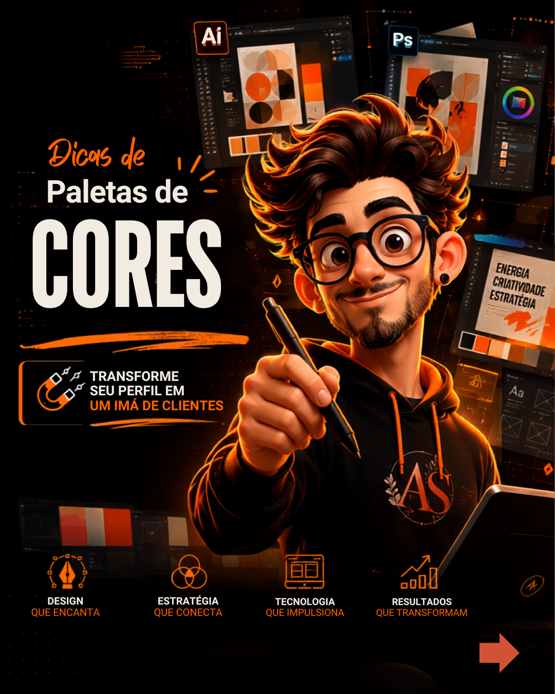
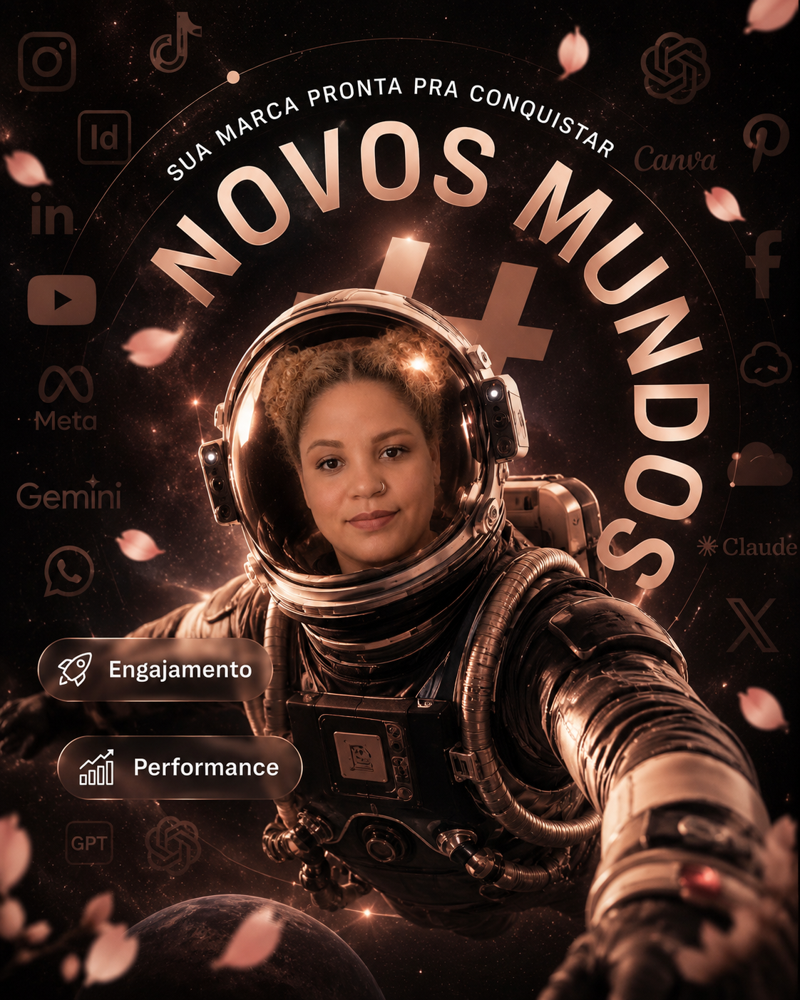

Web design
Sites e portfólios responsivos com clareza editorial.
Direção visual, web design e tecnologia para marcas que querem comunicar com clareza e ser lembradas.
Uma prática criativa híbrida: estratégia para dar direção, design para criar presença e tecnologia para tornar tudo possível.
Sou Jessica Gaya, da Angel Sakura. Transformo briefings em experiências visuais calmas, marcantes e prontas para o digital — sem perder a personalidade humana.
Criação visual pensada para organizar ideias, fortalecer marcas e criar conexão.
Sites e portfólios responsivos com clareza editorial.
Identidade, campanhas e peças para redes sociais.
Vídeos, animações e ritmo para contar histórias.
Processos criativos mais ágeis, sem perder intenção.
Uma galeria única de peças visuais. Deslize ou use as setas para explorar.

Forma, cor e hierarquia em equilíbrio.
Direção visual para criar reconhecimento.

Atmosfera visual com intenção.
Clareza e impacto no digital.
Do briefing à peça final.
Vídeos apresentados em uma área própria, separados das artes estáticas. Conteúdo classificado apenas como motion.
Animação com ritmo e direção visual.
Edição e identidade trabalhando juntas.
Uma ideia transformada em experiência.
Uma base híbrida para criar do primeiro rascunho à experiência publicada.